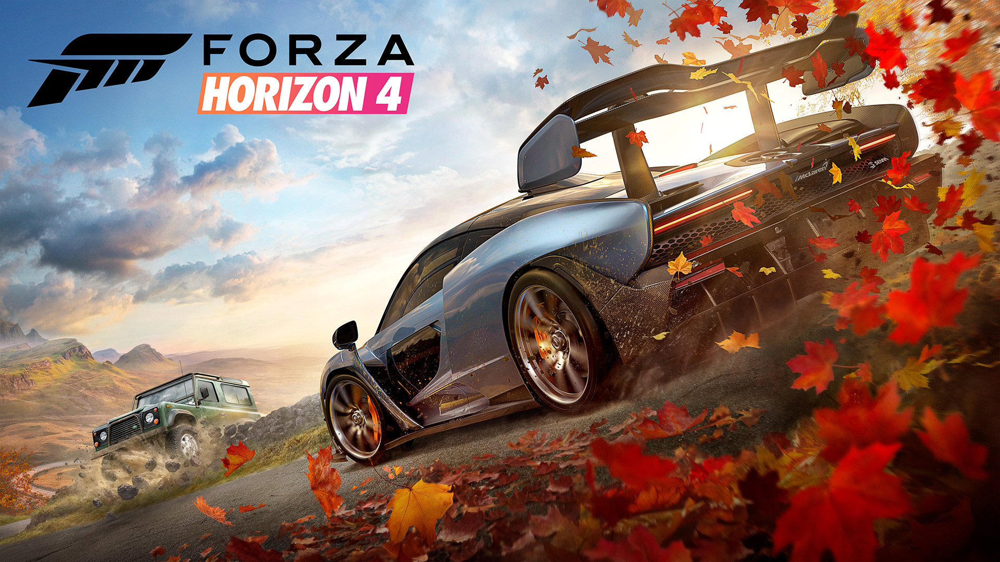
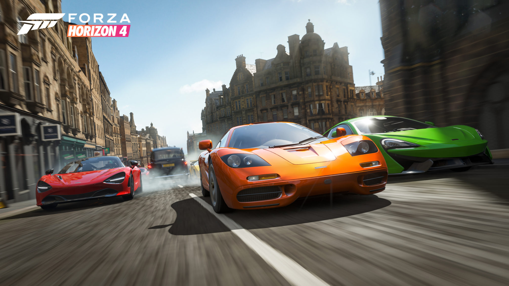

(Geçen yıl oyunu oynamaya başladıktan sonra hazırladığım ancak bir türlü yayınlama imkanım olmayan bu yazıyı, oyun 1. yılını doldurduktan sonra ufak değişiklikler ile yayınlıyorum.)
Araba yarışları her zaman favori oyun türlerimden biri olmuştur. Epyx’den PitStop 2 Commodore 64 günlerimde heyecanla oynadığım oyunların başında gelir. Sonrasında arcade tarzı ilk araba yarış oyunum Buggy Boy olmuştur. Büyüdüğümde ise biraz daha ciddi oyunlara mesela Accolade’in Test Drive serisine yönelmişimdir.
Oyun dünyasının gördüğü ilk açık dünya araba yarışı oyunu sanıyorum Test Drive III’dür. Günümüze yakın zamanlarda oynadığım ilk açık dünya araba yarışı oyunu ise Need for Speed Most Wanted olmuştur. Uzunca bir süre Free Play modunda sağda solda gezindiğimi hatırlarım. Ondan sonrasında uzun yıllar ortamında özgürce arabayla dolaşabileceğim bir oyun bulamadım. Sonrasında ise gerçek bir yarış oyunu olmasa da GTA V ile bu keyfi yaşama imkanım oldu.
Playstation’da Drive Club açık dünya olmadığı, free play imkanı vermediği ve sadece pist yarışları ile sınırlı kaldığı için beni pek başında oturtamadı, The Crew 2 ise beklentilerimin altında kaldı.
Forza Horizon 4, serinin önceki oyunlarını oynamadan girdiğim yeni bir dünya oldu. 450 küsurluk araba kataloğu ile şu ana kadar bildiğim araba seçimi konusunda en yüksek rakamları sunan oyun. Hiçbir zaman son model yarış canavarları ile ilgilenmemişimdir, eski arabalar ile günlük kullanım sıradan modeller ile serbestçe haritada dolaşabilmek bu tür oyunlarda en çok keyif aldığım şeydir.

Forza Horizon 4’de her arabanın kendine has özellikleri, motor sesleri dahil olmak üzere yansıtılmaya çalışılmış. Grafiklere gerçekçi biçimde yansıtılan araba modelleri ve iç görünümleri, sürüş dinamikleri ve ses efektlerinde ise biraz aceleye getirilerek baştan savılmış gibi. İlk bakışta aradığım bu audio-visual realizmi dışında oyunun sürüş mekanikleri genel anlamda iyi.
Free Play oynarken aradığım bazı özellikler bu oyuna da eklenmemiş maalesef. Örneğin sağa veya sola dönüşlerde sinyal verme olayı. Taa 2000’de Porsche Unleashed’de vardı bu özellik. Silecekler otomatik olarak çalışıyor, arada kendim çalıştırıp camı temizleyemiyorum. 😆 Unutulan bir başka önemli nokta ise hemzemin geçitler. Tren gelirken bariyerler kapanmıyor. Büyük olasılıkla unutulmuş yada bir bug mevcut, 1990 yılında Test Drive III’de bile bulunan bu özelliğin böyle bir oyunda olmaması komik oluyor. Bir diğer nokta şehirlerde gezerken etrafta pek insan olmaması. Tamam GTA V gibi yayalarla etkileşime girilen bir oyun değil bu ama koskoca şehrin kaldırımlarında insan olmaması bir hayalet şehir görüntüsü veriyor ki çok can sıkıcı. Trafik ışıkları da sürekli yeşil yanıyor, bence eksi bir puan daha. Zaman zaman şehrin içinde trafiğin yoğunlaşması, kalabalık saatlerde araç sürme imkanı gibi bir özellik de yok, yollar bomboş.
Oyunun haritası bana göre biraz küçük. Çok daha büyük bir alanda olmak harika olurdu. Arabayla dolaşırken yakalanan harika ışık ve manzarada arabasını görüntülemeyi sevenler için oyunda yer alan fotoğraf modu ise şimdiye kadar gördüklerim içinde en detaylı hazırlanmış olanı. Klasik screenshot mantığından farklı olarak filtre eklenebilen bu fotoğraflar görülmeye değer.
[gallery type=“rectangular” ids=“3302,3303,3305,3304”]
Yarış ve etkinlik sayısı oldukça fazla, günlük ve haftalık yapılacak görevler var ayrıca mevsimler de her hafta değişiyor bütün etkinliklerin zorluk düzeyi otomatik olarak değişmiş oluyor. Yarışlar drivatar sistemi ile oldukça heyecanlı geçiyor, kolaylıkla kazanabilmek mümkün değil hep peşinizde bir drivatar oluyor ve öne geçmek için en ufak hatayı bekliyor.
Online kısmı hakkında pek fazla şey söyleyebilmem mümkün değil, genelde single oynuyorum ama hype sonrasında çoğu kişinin online mod hakkında şikayetlerini okumaya başladım sağdan soldan.
Oyunu oynadığım saatler içinde düşünüp durdum araba yarışı oyunlarını neden bu kadar seviyorum diye? Kim bilir belki hayali canavarları öldürmekten çok daha gerçekçi olduğu içindir.